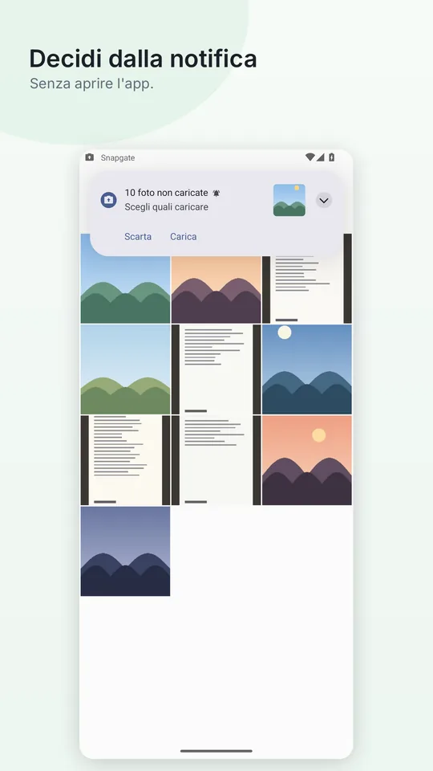
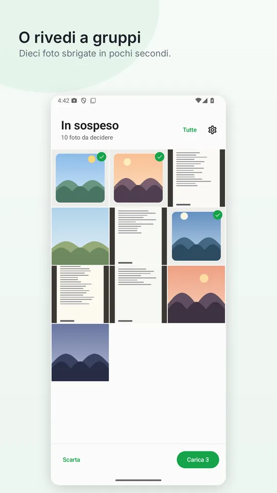
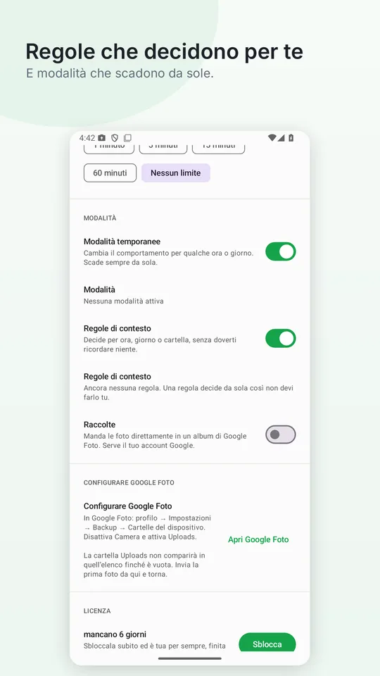
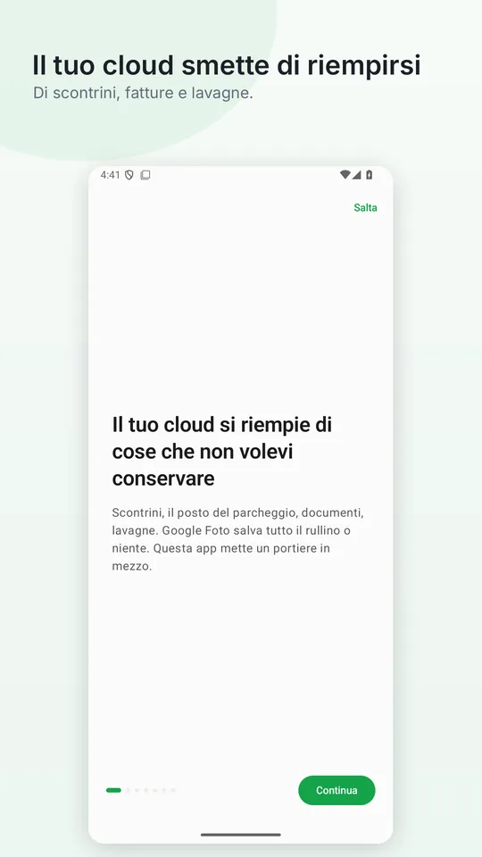

Il tuo cloud si riempie di foto che non volevi conservare
Il biglietto del parcheggio, la fattura, la lavagna di una riunione. Finisce tutto nella stessa cartella della fotocamera, e Google Foto sa caricare solo cartelle intere. Snapgate mette un portiere in mezzo: ti chiede di ogni foto nel momento in cui la scatti.
Android 11 o successivo · Acquisto unico, senza abbonamento
Scelta da HowToMenTra le 15 migliori app Android di ottobre 2026 · Guarda su YouTube
Anche su: Gadgets One · Bug.hr · 9TUENG
Ecco com’è




Il problema non è la fotocamera, è che Google Foto decide per cartelle
Google Foto ti lascia scegliere quali cartelle salvare e caricare singole foto a mano. Ma tutto ciò che scatti con la fotocamera finisce nella stessa cartella: la fattura viaggia con le vacanze, e scegliere a mano dopo è proprio ciò che nessuno fa. Per questo il tuo spazio si riempie di cose fotografate per guardarle dieci minuti.
Ci sono due modi di fermarlo: rivedere il rullino ogni tanto e cancellare a mano — cosa che non fa nessuno — oppure decidere sul momento. Snapgate è il secondo.
Quattro passi, e uno solo è tuo
Tutto succede nei secondi dopo lo scatto, mentre ancora ricordi perché hai fatto quella foto.
Scatti la foto
Con la tua fotocamera di sempre. Snapgate non sostituisce nulla e non si mette in mezzo.
Arriva un avviso
Meno di mezzo secondo dopo che il sistema registra l'immagine, con la miniatura per vedere su cosa stai decidendo.
Tocchi Carica o Scarta
Nella notifica stessa. Senza aprire l'app né confermare altro.
Ciò che scarti resta sul telefono
Non viene eliminato né caricato: semplicemente non occupa mai spazio nel tuo account Google.
E quando non vuoi decidere ogni volta
Perché ci sono momenti in cui essere interrotti dà più fastidio che aiuto.
Modalità temporanee
«Per otto ore non caricare niente.» «Questi quattro giorni carica tutto, sono in viaggio.» Scadono sempre da sole.
Regole di contesto
Decidi per orario, giorno della settimana o cartella. Le foto in orario di lavoro non devono finire nel tuo account personale.
Raccolte
Manda ciò che approvi direttamente in un album preciso della tua libreria.
Finestra di decisione
Una foto viene proposta solo nei primi minuti. Se non rispondi resta sul telefono e smette di disturbarti.
Consumo trascurabile
0,02 secondi di CPU al minuto in background, misurati. A schermo spento non fa assolutamente nulla.
Sei lingue
Spagnolo, inglese, portoghese, francese, tedesco e italiano, comprese le forme plurali che quasi nessuno traduce bene.
Cosa Snapgate non può fare
Snapgate non ha server. Non c'è nessun posto dove mandare le tue foto, perché non esiste.
Quando colleghi il tuo account Google, l'app chiede un permesso specifico che le consente solo di aggiungere foto alla tua libreria. Non può leggerle, non può modificarle e non può eliminare nulla di ciò che hai già. Questo limite non è una nostra promessa: lo impone Google, e puoi verificarlo nella schermata di consenso prima di accettare.
La posizione, se attivi le regole per luogo, viene letta al momento dello scatto e non viene mai salvata né trasmessa. Nessuna analitica, nessun tracciamento, nessuna pubblicità.
L'unica destinazione di una foto è la tua libreria, e solo quando lo chiedi tu.
Domande legittime
Google Foto non permette già di scegliere cosa caricare?
In parte. Puoi attivare o disattivare il backup per cartella e caricare singole foto a mano. Quello che non fa è chiederti di ogni nuova foto: quelle della fotocamera vanno tutte insieme, e scegliere dopo vuol dire ricordarsene. Snapgate chiede sul momento, quando sai ancora perché l'hai scattata.
Devo disattivare il backup di Google Foto?
Sì, ed è l'unico passo che nessun progetto può evitare. Finché è attivo, Google Foto carica tutto il rullino qualunque cosa faccia Snapgate. È un solo interruttore e la configurazione ti ci accompagna.
E se non rispondo alla notifica?
Non succede niente. La foto resta sul telefono, non viene caricata, e dopo qualche minuto smette di chiedertelo. Configurabile, cinque minuti di default.
Cancella le mie foto?
Mai. Scartare significa «non caricarla»; la foto resta nel rullino esattamente come prima.
Perché serve una notifica permanente?
Perché Android avvisa di una foto nuova solo le app in esecuzione. È il prezzo di saperlo subito invece che ogni quindici minuti. Puoi nasconderla dalle impostazioni di sistema.
È un abbonamento?
No. Quattordici giorni di prova, poi un acquisto unico.